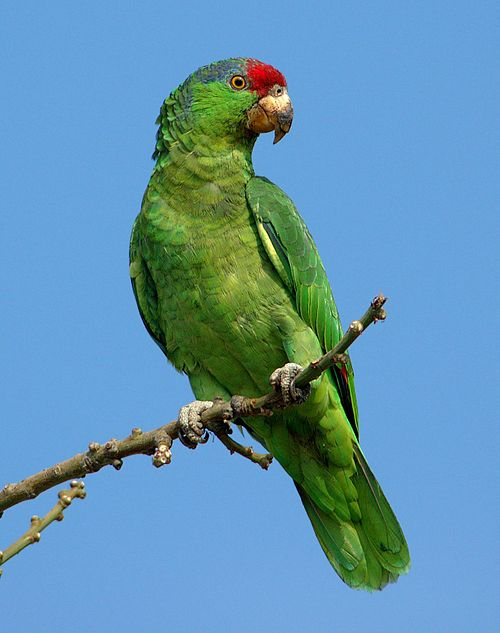
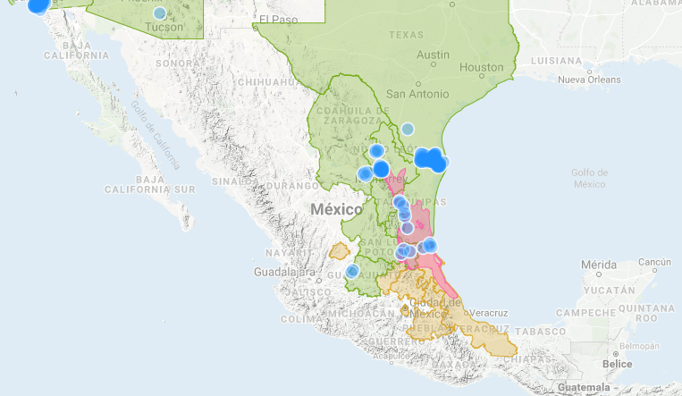
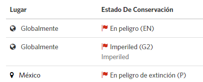

Descripción
Loro Amazona de tamaño mediano con cola corta; la longitud total incluyendo cola es de aproximadamente 33 cm, con un peso de 316 g. Tienen la corona rojo brillante rodeada de azul
violeta desde la parte posterior del supercilium hasta los lados de la parte posterior de la corona, algunas veces extendiéndose a los lados del cuello e incluso de la nuca. Las
plumas de las partes posteriores de la corona y del cuello presentan el borde oscuro, lo que les da una apariencia escamosa. Las mejillas son verde brillante sin apariencia escamosa.
Presentan un parche rojo en las secundarias exteriores, o bien remiges color negro azuloso. Los hombros y la base de la cola son verdes, la cola con un borde verde amarillento.
El pico es color amarillo-crema pálido, el anillo orbital y las patas gris pálido. Los juveniles o subadultos presentan el rojo limitado a la frente y algunas veces en algunas plumas
esparcidas en la corona; el azul en los lados de la corona tiende a formar una franja ancha sobre y atrás de los ojos

Hábitat
El hábitat típico en el noreste de México es bosque tropical subcaducifolio característico del límite norte de la Provincia Biótica Veracruzana, el cual tiene un dosel relativamente
abierto con especies de árboles resistentes a heladas, con alturas entre 15 y 20 m.
La especie también utiliza el matorral Tamaulipeco dominado por leguminosas leñosas y espinosas de alrededor de 5 a 8 m de altura, especialmente en barrancos y áreas riparias con
árboles de mayor altura, y en bosques de Quercus-Liquidambar styraciflua.

Situación actual

Chordata: Son un filo del reino animal caracterizado por la presencia de una cuerda dorsal o notocorda. Psittaciformes: Son un orden de aves que incluye aproximadamente 86 géneros con 372 especies que se encuentran principalmente en las zonas tropicales y subtropicales. Psittacidae: Son una familia de aves psitaciformes llamadas comúnmente loros o papagayos, que incluye a los guacamayos, las cotorras y formas afines de América y África.
 Aves en peligro de extinción
Aves en peligro de extinción